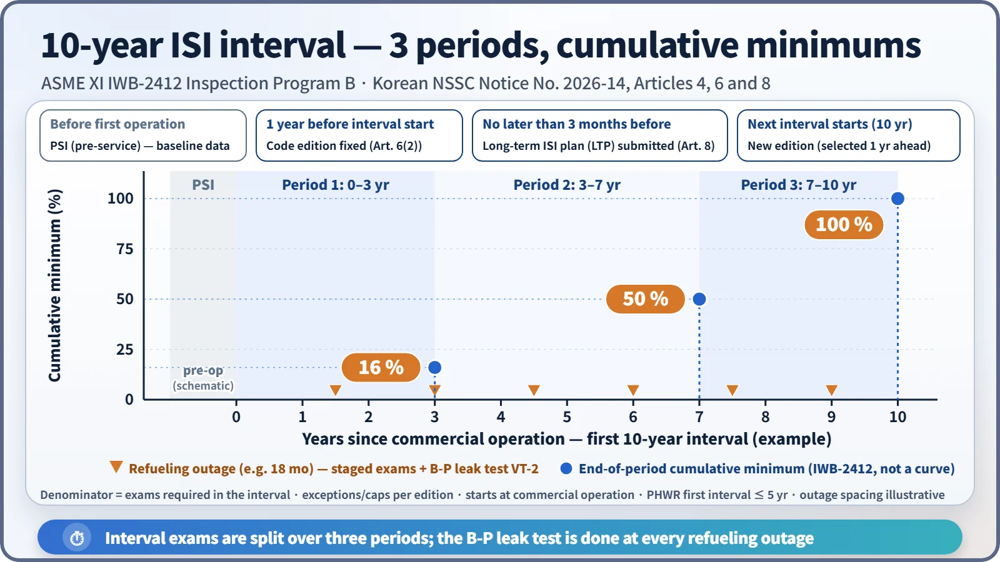
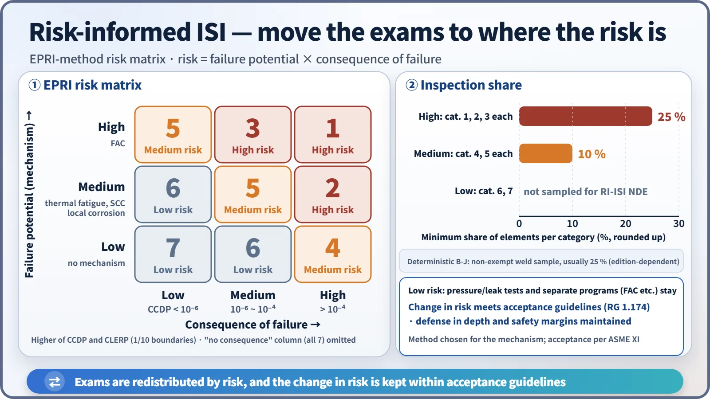
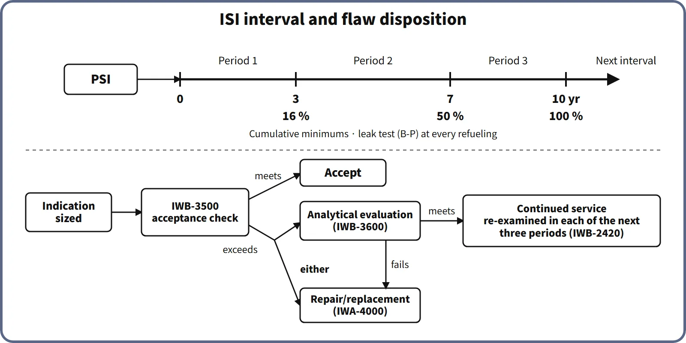

Operation, Regulation & Quality · C-OP-010
In-Service Inspection (ISI) — The 10-Year Interval and Three Periods, Examination Categories, Flaw Disposition and Risk-Informed ISI
How operators find aging flaws before failure: the 10-year interval, examination categories and methods, flaw acceptance and evaluation, and the risk-informed approach.
In-service inspection (ISI) is the set of nondestructive examinations, pressure tests, repairs and replacements, and evaluations of unexpected operating events that the operator carries out to monitor and evaluate how far safety-related equipment has degraded with time during plant operation; it includes the pre-service inspection (PSI) performed before operation.
The technical code most widely used for ISI is ASME Section XI.
Principle and mechanism
Why look again and again
The pressure boundary is designed and fabricated to ASME III quality, but in service it is subject to aging degradation: fatigue, stress corrosion cracking (SCC), flow-accelerated corrosion (FAC), boric acid corrosion and neutron irradiation embrittlement. ISI is the system that finds the flaws this degradation produces before failure, sizes them and decides whether they are acceptable. It is built in three stages.
- Pre-service inspection (PSI): before first operation, the same methods and scope as ISI are applied to record a baseline. Later indications are judged against it to tell fabrication flaws from service-induced flaws. PSI is repeated after repair or replacement.
- In-service inspection: within the 10-year inspection interval, specified locations are examined by specified methods, spread over the interval.
- Flaw disposition: comparison with acceptance standards → repair/replacement or analytical evaluation → successive and additional examinations.
The 10-year interval and three inspection periods
ISI is organized in 10-year inspection intervals, counted from the start of commercial operation. ASME XI Inspection Program B (IWB-2412) divides the 10 years into three periods ending at cumulative years 3, 7 and 10, and requires at least 16 %, 50 % and 100 % of the examinations to be complete (cumulatively) by the end of each period. In practice the examinations are spread over the planned refueling outages. The Class 1 system leakage test (B-P, VT-2), however, is done at every refueling outage.

What is examined, and by which method
| Examination category (Class 1, IWB) | Component | Method |
|---|---|---|
| B-A | Reactor vessel pressure-retaining welds (shell, head) | Volumetric (UT) |
| B-D | Full-penetration nozzle-to-vessel welds, nozzle inside radius | Volumetric |
| B-G-1, B-G-2 | Pressure-retaining bolting (over 2 in, 2 in and under) | Volumetric, VT-1 |
| B-J | Class 1 piping welds | NPS 4 and over: volumetric + surface; under NPS 4: surface |
| B-N-1 | Reactor vessel interior | VT-3 |
| B-O | Control rod drive housing welds | Volumetric or surface |
| B-P | All Class 1 pressure-retaining components | System leakage test, VT-2 |
The table shows representative examples. Exact methods and extent follow the item-by-item requirements of the applicable edition.
There are three families of methods. Volumetric examination (UT, RT) finds flaws within the wall thickness; surface examination (PT, MT, ET) finds surface and near-surface flaws; visual examination comprises VT-1 (surface condition: cracks, wear, corrosion), VT-2 (evidence of leakage during a pressure test) and VT-3 (structural condition: deformation, gaps, displaced parts). UT may be performed only with procedures and personnel whose flaw-detection capability has been demonstrated on test specimens (ASME XI Appendix VIII). This is known as performance demonstration.
![Partial schematic of a PWR reactor vessel, steam generator, piping and pump with leader lines to Class 1 examination categories: B-O CRDM housing welds, B-G-1 head studs, B-D nozzle-to-vessel welds, B-Q steam generator tubes, B-J piping butt welds, B-A vessel welds and B-N-1 vessel interior, with B-P system leakage test at every refueling, beside a table of volumetric, surface and visual methods and cards for augmented examinations (Code Cases N-729, N-770) and UT performance demonstration (Appendix VIII)](../../assets/images/concepts/c-op-010-in-service-inspection/fig2-class1-examination-categories.webp)
When a flaw is found
- The indication is sized and compared with the IWB-3500 acceptance standards (Table IWB-3410-1). If it is within them, it is accepted.
- If it exceeds them, the component is either repaired or replaced (IWA-4000), or an analytical evaluation (IWB-3600) predicts the flaw growth (fatigue, SCC) to end of life to decide whether it is acceptable. For ferritic vessels the representative criteria are KI < KIa/√10 for normal and upset conditions and KI < KIc/√2 for emergency and faulted conditions.
- A flaw accepted for continued service by analysis is re-examined in each of the next three inspection periods (IWB-2420). If the evaluation is not satisfied, the route is repair or replacement. In a category where a flaw exceeding the standards is found, additional examinations (IWB-2430) expand the sample, and if more are found, all remaining items are examined.
What it means in a plant
- Design: accessibility and inspectability must be secured at the design stage (GDC 32, 10 CFR 50.55a(g)(3)). Locations that cannot be examined become candidates for alternatives or relief requests.
- Operation: the operator prepares a long-term inspection plan for each 10-year interval and reports the results of each outage campaign to the regulator; flaws exceeding the acceptance standards must be dispositioned before the unit returns to service.
- Safety: ISI is the in-service means of confirming the integrity of the reactor coolant pressure boundary (RCPB). Together with leak detection it is one pillar of the leak-before-break (LBB) argument.
- Operating experience: steam generator tubes follow the SG program in the Technical Specifications (ECT, plugging at 40 % through-wall). Reactor vessel head penetrations and dissimilar-metal welds received augmented examinations under Code Cases N-729 and N-770 because of PWSCC experience.
Risk-informed ISI (RI-ISI)
Deterministic ISI examines a fixed share of welds evenly, as in B-J. RI-ISI assigns each piping segment a risk = failure potential (degradation mechanism) × consequence of failure (CCDP, CLERP) and moves the examinations to high-risk locations.
- Basis: RG 1.174 and 1.178, SRP 3.9.8, and RG 1.200 for PSA quality. The methodologies are EPRI TR-112657 and WCAP-14572, Code Cases N-560, N-577 and N-578, the streamlined N-716, and ASME XI Appendix R.
- EPRI method: a consequence rank (CCDP boundaries at 10⁻⁴ and 10⁻⁶) and a failure-potential rank (FAC high; thermal fatigue and SCC medium; no mechanism low) give risk categories 1 to 7. At least 25 % of the elements in each high-risk category (1 to 3) and 10 % in each medium-risk category (4 and 5) are selected for examination (element counts rounded up). Low-risk elements drop out of the RI-ISI sample, but pressure and leak tests and separate degradation programs such as FAC remain.
- Conditions: the change in risk must meet the RG 1.174 acceptance guidelines, and defense in depth and safety margins must be maintained. What changes is "where and how much". The examination method is chosen to suit the degradation mechanism, and acceptance is still evaluated against the ASME XI requirements.
- "Risk-based inspection" (RBI) is the petrochemical term (API 580/581); in nuclear plants the corresponding approach is RI-ISI.

Regulatory and design criteria
The technical requirements come from ASME Section XI; national regulations decide which edition applies and how it is enforced. For example, in the United States (US NRC):
| Basis | Key point |
|---|---|
| 10 CFR 50.55a(g) | PSI and ISI to ASME XI; the code of record is the edition incorporated 18 months before the interval starts (latest incorporated: 2021 Edition) |
| 10 CFR 50.55a(f) | Pump and valve IST to the ASME OM Code |
| RG 1.147, RG 1.178 | Acceptance of Code Cases; RI-ISI for piping |
In the United States, the July 2024 revision replaced "120-month interval" with "code of record interval". A licensee using the 2017 Edition or later can keep its code of record for up to two intervals. The inspection interval itself is still 10 years.
Easily confused pairs
| In-service inspection (ISI) | In-service testing (IST) | Reactor vessel surveillance | |
|---|---|---|---|
| Question asked | Has a flaw or degradation appeared? | Does it operate at the specified performance? | How far has irradiation embrittlement progressed? |
| Scope | Pressure boundary, supports, containment structures | Pumps, valves, dynamic restraints | Surveillance specimens of beltline material |
| Standard | ASME XI, 10 CFR 50.55a(g) | ASME OM Code, 10 CFR 50.55a(f) | 10 CFR 50 Appendix H |
| Frequency | 10 years (three periods) | Per test: quarterly, every 2 years, etc. | Capsule withdrawal schedule |
Inspections that the regulator itself performs (for example at refueling outages) are regulatory inspections; ISI is an inspection program performed by the operator.
Key points at a glance
- Definition: the operator's nondestructive examinations, pressure tests, repair/replacement and event evaluations that monitor and evaluate the degradation of safety-related equipment with time in service, including PSI.
- Basis: ASME Section XI; for example, in the United States, 10 CFR 50.55a(g).
- Scope: Safety Class 1, 2 and 3 components (IWB, IWC, IWD), supports (IWF), containment Class MC and CC (IWE, IWL).
- Interval: 10 years (counted from commercial operation); three periods at cumulative 3, 7 and 10 years with minimums of 16, 50 and 100 %; B-P leak test at every refueling.
- Methods: volumetric (UT, RT), surface (PT, MT, ET), visual (VT-1, VT-2, VT-3); performance demonstration for UT (Appendix VIII).
- Flaws: IWB-3500 acceptance standards → if not met, repair/replacement or IWB-3600 evaluation → if kept in service, re-examination in the next three periods; additional examinations.
- Code edition: set by national regulation; in the United States the code of record is the edition incorporated 18 months before the interval starts.
- RI-ISI: risk = failure potential × consequence; 25 % of high-risk and 10 % of medium-risk elements; change in risk within the acceptance guidelines (RG 1.174).
